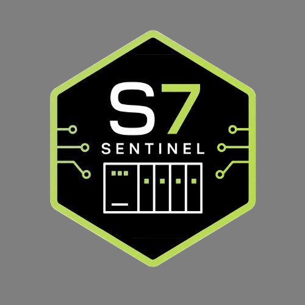

DEFENSIVE OT/ICS SECURITY // SIEMENS S7
S7Sentinel
S7Sentinel is a defensive, read-only OT/ICS security framework for Siemens S7 PLC security assessment and AI-agentic intrusion detection. Implements AA26-231A hardening checks, TCP/102 exposure analysis, engineering-workstation artifact hunting, normalized telemetry analytics, and MITRE ATT&CK/D3FEND mapping without PLC writes, exploit execution, credential attacks, or Internet-wide scanning.
Read-only defensive assessment only: no PLC writes, exploits, credential attacks, or Internet-wide scanning.
Columns: asset,ip,model,firmware,tcp102,internetExposed,engineeringWorkstation,allowlist,backups,notes.
Assets0
TCP/1020
Internet exposed0
Engineering WS0
| Asset | IP | Model | TCP/102 | Internet | Allowlist | Backups |
|---|
Findings0